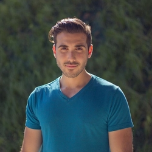

About Me
A few details...

BIO
Ilario Circosta is a composer and pianist from Toronto, Canada.
Sandrine
2013
Ilario has scored many independent and student films including Sandrine (2013) which participated in 25 film festivals globally. It won the RISING STAR AWARD for Leoni Amandin (actress) and the AUDIENCE CHOICE AWARD for BEST LGBTQ FILM at the Rhode Island International Film Festival, USA
Maximilian
2016
Ilario Scored the Swiss German documentary Maximilian (2016) which participated in the Foyle Film Festival. Maximilian was available in select theatres around Switzerland and had it's Television premiere on the German channel 3SAT in August 2018
Personal
2019
Ilario is also studying piano and music composition privately in Toronto, Canada.